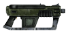
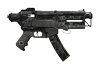
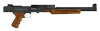

На главную Оружие Об игре Купить в Steam
На главную Оружие Об игре Купить в Steam
| Место в топе | Фото | Название | Урон | Урон в секунду | Боеприпасы | Обойма | Стоймость | Требования к навыкам |
| 1 |  |
Автоматический пистолет-пулемет 45 калибра | 26 | 286 | .45 Auto | 30 | 3750 | Оружие:75, Сила:6 |
| 2 |  | 12.7-мм пистолет-пулемёт | 25 | 198 | 12.7 мм патрон | 15 | 5100 | Оружие:0, Сила:6 |
| 3 |  | 10-мм пистолет-пулемёт | 20 | 181 | 10-мм патрон | 30 | 2370 | Оружие:0, Сила:6 |
| 4 |  |
9-мм пистолет-пулемёт Вэнса | 13 | 139 | 9-мм патрон | 60 | 1500 | Оружие:0, Сила:3 |
| 5 |  | Пистолет-пулемёт кал. 22 с глушителем | 10 | 110 | Патрон кал.22LR | 180 | 1850 | Оружие:0, Сила:2 |
| Оружие | Местонахождение |
| Автоматический пистолет-пулемет 45 калибра | Обычно этим оружием вооружены громобои Белоногих. Можно приобрести у Джошуа Грэхема. После возвращения из Национального парка Зайон это оружие можно купить у «Оружейников». |
| 12.7-мм пистолет-пулемёт | Это оружие можно приобрести только у Торготрона в штаб-квартире Оружейников. |
| 10-мм пистолет-пулемёт | Убежище 34 — 4 экземпляра в оружейной (там же — боеприпасы к ним). В продаже у многих торговцев — как странствующих, так и городских. Если от рекламного щита, в тени которого располагается Лоунсем Дрифтер, двигаться по направлению к Стрипу, у следующего щита Курьер столкнётся с засадой банды Шакалов, чей предводитель будет вооружён этим ПП. В сейфе на стене в президентских апартаментах (слева от стойки, за которой Курьера встретит Бенни). Если во время квеста «Стычка в Боулдер-Сити» вы решите уничтожить засевших в городе Ханов, эти ПП можно будет снять с их тел в большом количестве. Даже если во время квеста «Солдатский блюз» будет выбран мирный способ прохождения, в заключительной сцене погибнет как минимум одиниз Королей (не считая Пейсера), чей 10-мм пистолет-пулемёт может достаться Курьеру. Лоботомиты иногда могут быть вооружены им. Руины Боулдер-Сити — в одном из разрушенных домов, в ванне. Им могут быть вооружёны легионеры-деканы — например, декан в локации Походный лагерь Легиона, или члены карательных отрядов. |
| 9-мм пистолет-пулемёт Вэнса | За несколько дней до появления в Примме Курьера «9-мм пистолет-пулемёт Вэнса» стащила из тамошнего казино другая парочка — Полин и Сэмми Уинс, мечтающие о собственной странице в истории. Они скрываются к северо-западу от Фрисайда, между заводом «Эйч-энд-Эйч тулз» и ломбардом Мигеля, в хибаре, сколоченной из металлических листов. Оружие хранится в сейфе их убежища. |
| Пистолет-пулемёт кал. 22 с глушителем | Убежище 11 — в жилом отсеке. Оружейники — можно купить у Торготрона. Бухта озёрников — в одной из двух спортивных сумок. При встрече с Бенни в казино «Топс» его охранники будут вооружены именно этими ПП. Носят некоторые из Чертей, обитающих в Убежище 3. Канализация, расположенная неподалёку от Фрисайда. |